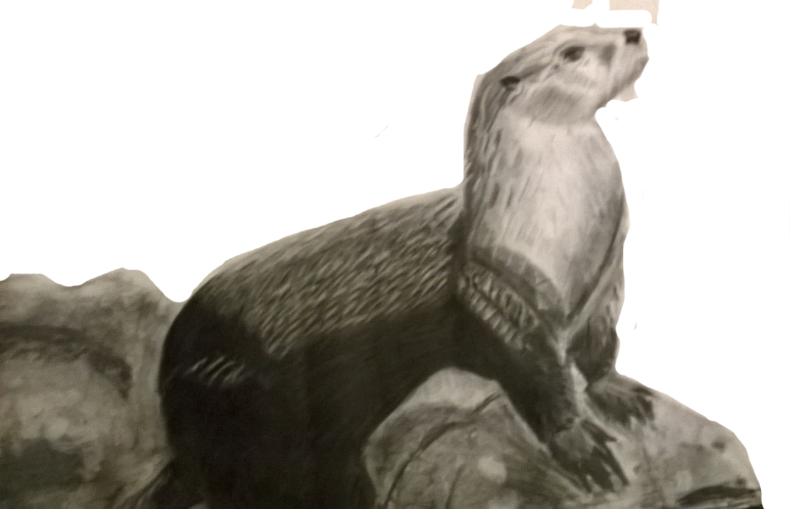

My Art Portfolio
Gallery of my work from the past 5 years
 A compile of my portfolio
A compile of my portfolio
 Wendy Umana, Swim, 2014, Printmaking Ink, 8x10in
Wendy Umana, Swim, 2014, Printmaking Ink, 8x10in
 Wendy Umana, Vase, 2014, Pen, 11x17in
Wendy Umana, Vase, 2014, Pen, 11x17in
 Wendy Umana, Hoist, 2014, Pastel, 16x22in
Wendy Umana, Hoist, 2014, Pastel, 16x22in
Wendy Umana, Self Portrait, 2014, Charcoal, 33x50in
 Wendy Umana, Artist Within, 2014, Illustrator, 11x26in
Wendy Umana, Artist Within, 2014, Illustrator, 11x26in
Wendy Umana, Father, 2013, Illustrator, 8x11in
Wendy Umana, Self Portrait, 2014, Oil Paint, 22x28in
 Wendy Umana, Jen's Fantasy, 2016, Acrylic Paint, 39x30in
Wendy Umana, Jen's Fantasy, 2016, Acrylic Paint, 39x30in
Wendy Umana, Yearbook, 2014, Illustrator
 Wendy Umana, Bracelet, 2015, Mix Media, 8x10in
Wendy Umana, Bracelet, 2015, Mix Media, 8x10in
 Wendy Umana, Why, 2015, Photography
Wendy Umana, Why, 2015, Photography
Wendy Umana, Space, 2015, Charcoal, 30x22in
Wendy Umana, Red Panda, 2015, Charcoal, 30x22in

Wendy Umana, Ottor, 2015, Charcoal, 30x22in
Wendy Umana, Deer Island, 2015, Pastel, 36x22in
Wendy Umana, Leo, 2015, Acrylic Paint, 8x11in
Wendy Umana, Alma, 2014, Watercolor, 4x6in
Wendy Umana, Baby, 2014, Paste;, 8x10in
Wendy Umana, Love, 2014, Paste;, 8x10in
 Wendy Umana, Light of the Warrior, 2017, Illustrator, 25x35in
Wendy Umana, Light of the Warrior, 2017, Illustrator, 25x35in